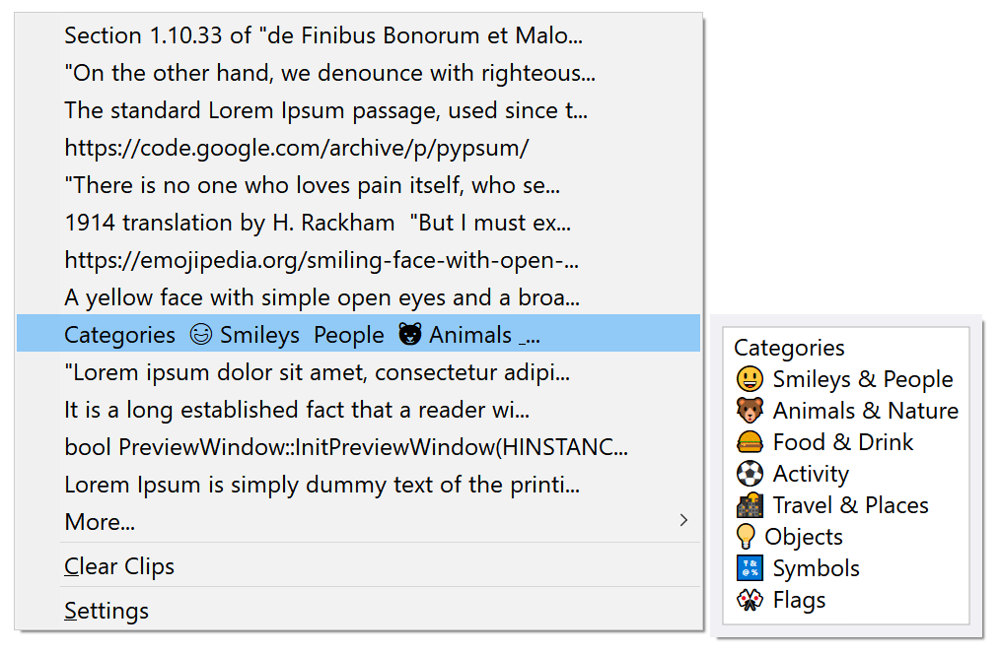

Winclipper
Winclipper is a better clipboard manager for Windows with Unicode support and a built-in preview so that you always know exactly what you're pasting.
Yes, it can do emoji
If you love emoji, you can copy and paste with confidence. Winclipper is Unicode compliant and can paste anything you throw at it, including emoji, or any font-supported Unicode character. On Windows 8.1 and higher, you can preview any emoji you copy to ensure your meaning is always clear!

A built-in preview makes programming painless
Winclipper is designed with software development in mind. A large, responsive preview window makes it easy to distinguish similar blocks of code from one another.